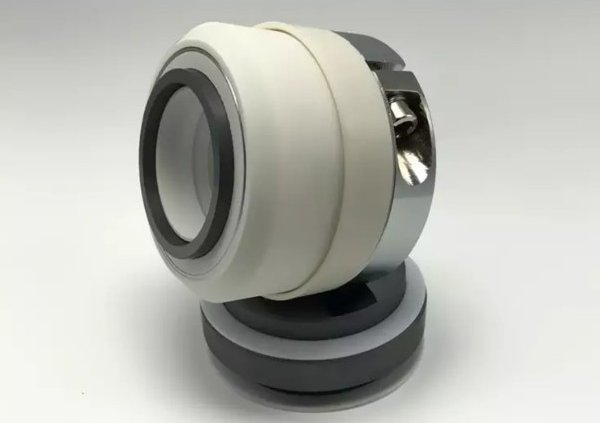

// Can also be used with $(document).ready() $(window).load(function() { $('.ref').ref({ animation: "slide" }); });
Adventurer Cheesecake Brownie

Adventurer Lemon
Adventurer Donut
Adventurer Caramel